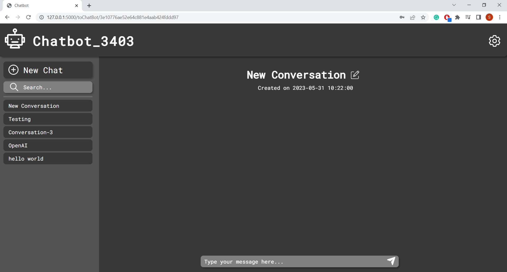

Our chatbot application "web_chatbot" aims to deliver functionality with a smooth user interface (UI) and user experience (UX). We have designed this application to be simple and efficient, avoiding unnecessary complexities commonly found in other chatbots.
The application is intended for anyone who wants to have interactive and engaging conversations with a chatbot. Users can initiate multiple conversations, manage them individually, and search for previous conversations using keywords.
The application works by employing a Flask backend divided into two primary modules: user authentication and conversation management. User authentication includes functionalities such as login, registration, and auto-login, while the conversation module manages operations related to initiating, updating, and searching for conversations.
By integrating the GPT-3 model from OpenAI, our chatbot can generate dynamic and interactive responses, creating a natural, human-like interaction experience. Additionally, in order to provide our users with a secure platform, we have implemented encryption techniques and JWT (JSON Web Tokens) for access control.
In conculsion, web_chatbot is an intuitive and efficient chatbot application that offers a user-friendly and secure platform for interactive conversations.
Overview: Add a delete button next to each conversation title. This allows users to remove entire conversations from their chat history. This would help clear up and organize the user interface, especially if there are many inactive or redundant chats.
| User Story ID | User Story | Story Point |
|---|---|---|
| #1 | As a user, I want to have a delete button so that I can choose to delete specific conversations. | 3 |
| #2 | As a user, I want the conversation list to update in real-time when a conversation is deleted | 2 |
| #3 | As a user, I want a confirmation prompt after I click on the delete button to prevent accidental deletions. | 1 |
Test Cases:
Overview: Implement a feature where users can store and categorize their conversations into different specific folders. This will help users better organize their conversations based on specific criteria such as topic, participants, date, etc.
| User Story ID | User Story | Story Point |
|---|---|---|
| #1 | As a user, I want to create folders for my conversations so I can categorize them. | 3 |
| #2 | As a user, I want to move my conversations to a specific folder by dragging and dropping them. | 4 |
| #3 | As a user, I want to view the conversations inside each folder when I click on it. | 2 |
| #4 | As a user, I want to remove conversations from a folder if I decide to reorganize. | 1 |
Test Cases:
Managing communication within a team of student developers can be challenging, but setting clear expectations and open communication channels can alleviate most issues. Regular meetings, at least twice a week, are recommended to keep everyone aligned. Each meeting should have clear goals, including demonstrations of individual progress, group discussions for feedback and suggestions, and task allocation for the upcoming period. Tools like Microsoft Teams can facilitate this process.
The Agile methodology can be very helpful. Start by creating a to-do list and estimating the effort for each task. Then, prioritize the tasks based on their importance, potential risk, and dependencies. Always make sure to account for potential setbacks and keep the plan flexible, updating it regularly based on progress and any new tasks or requirements that may come up. This iterative approach helps to manage multiple deadlines effectively and allows for constant progress.